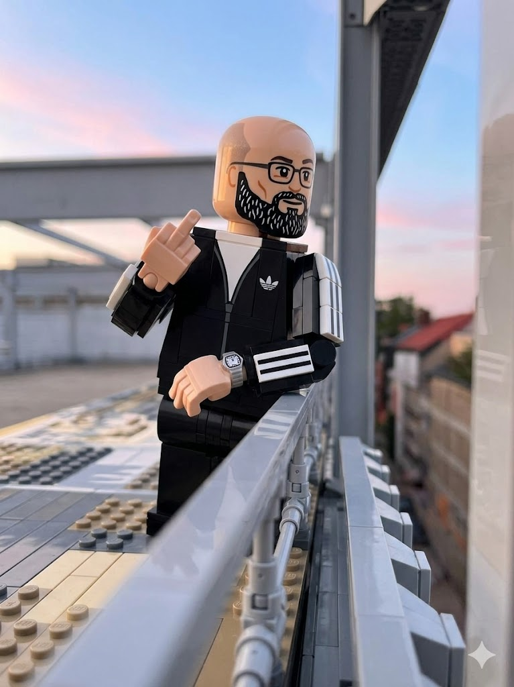

Florenz Heldermann.
Senior Frontend Consultant · UX / UI / Engineering
More than 15 years at the intersection of UX, UI, engineering and business. Focus: scalable Vue/Nuxt architectures, well considered UI systems and greenfield prototyping for e-commerce and content driven products. From UX concept and interaction prototype through to production rollout, as tech lead, UI engineer or hands-on developer, depending on the project.
